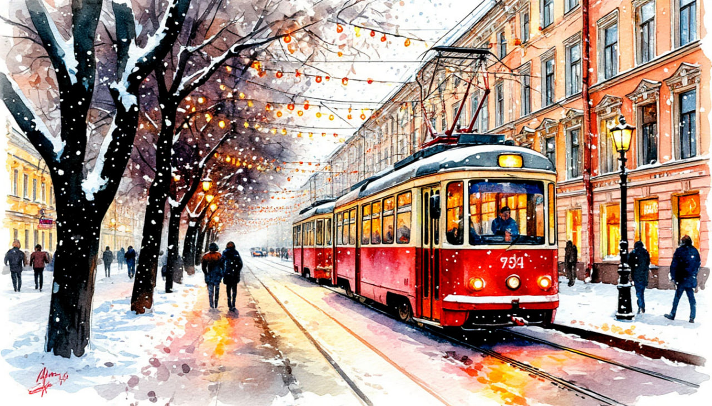

Нижегородская сказка | Нижний-Новогород + Городец

💥ТОЛЬКО 1 ДЕНЬ💥 ТОЛЬКО 11.11.💥СКИДКА - 1 500 р.💥
Даты тура: с 4 января 2026 (вс) по 5 января 2026 (пн)
Стоимость тура:
14 60013 100 р. - взрослый14 40012 900 р. - пенсионеры/школьники17 30015 800 р./чел - одноместное размещение
По программе:
- - Обзорная экскурсия по г. Городец
- - Интерактивная программа "В гостях у Облаевых"
- - Мастер-класс "городецкая роспись"
- - Посещение города мастеров
- - Обзорная экскурсия по исторической части Нижнего Новгорода
- - Посещение Кремля (осмотр территории)
- - Посещение Нижегородской Ярмарки
Программа тура:
1 день:
- 05-00- выезд из Костромы от ТРЦ "РИО"
- Сегодня нас ждет город ремесленников и мастеров - Городец.
- Обзорная экскурсия по городу. Во время обзорной экскурсии по Городцу вы побываете в так называемом «музейном квартале» Городца, где едва ли не каждый дом уникален, украшен ажурной резьбой, а все вместе эти улочки воссоздают дух старинного
- 12-00 Интерактивная программа "В гостях у Облаевых". Успех этой программы состоит в том, что участники попадают в «маленький театр», где имеют место яркие и красочные образы, а интерактивность предполагает тесное взаимодействие с посетителями и вовлечение их в действия, будь то ребёнок или взрослый. Во время театрализованной экскурсии «В гостях у Облаевых» произойдёт знакомство с хозяевами данной усадьбы и нравами купечества Городца. Все театрализованные инсценировки основаны на реальности той эпохи и подтверждаются газетой «Волгарь»
- Мастер-класс "городецкая роспись".
- 14-00 Посещение города мастеров. Музейно-туристический комплекс «Город Мастеров» открыл свои двери в январе 2010 года. В ходе экскурсии вы познакомитесь с различными промыслами Нижегородской области: произведениями древней русской живописи, изделиями городецкой росписи, золотой вышивкой, вышивкой в стиле гипюр, резьбой по дереву, гончарными изделиями и жбанниковской свистулькой. Само здание комплекса воссоздано в традициях русского деревянного зодчества. Особая ценность архитектурных сооружений в том, что они представляют историю «глухой» домовой резьбы во всем ее богатстве и красоте, с присущей городецким мастерам-резчикам манере.
- Обед в кафе города.
- Переезд в Нижний Новгород.
- Размещение в гостинице. Свободное время.
2 день:
- Завтрак в гостинице. Освобождение номеров
- Обзорная экскурсия по исторической части города.
- Нижний Новгород – один из красивейших городов России. Особую привлекательность город приобретает в вечернее время суток благодаря разноуровневому расположению (низменная и нагорная части города), которое удачно используется Новогодней подсветкой. В этом есть некая таинственность и мощь старинного города на месте слияния двух великих рек Волги и Оки. Нижегородский Кремль – подсвеченный со стороны Кремлёвского бульвара и изнутри, низкие горящие фонари, словно горящие свечи ансамбля главной Кремлёвской площади, подсветка главных пешеходных улиц Большой Покровской и Рождественской, иллюминация телевизионной башни, Нижегородские Откосы, площади и многое другое – всё это непередаваемая красота Нижнего.
- Во время экскурсии мы проедем по историческому центру города и рассмотрим поближе архитектуру и достопримечательности Нижнего Новгорода. Полюбуемся красивыми видами с разных ракурсов. Благодаря подсветке и Новогоднему убранству города со смотровых площадок легко определить местоположение Оки, Волги, Стрелки. Празднично и красиво смотрятся Собор Александра Невского, построенный к Чемпионату Мира стадион Нижний Новгород, Главный Ярмарочный Дом, ансамбль Благовещенского мужского монастыря с его символом — Ангелом трубящим, купола Рождественской церкви, триумфальность Чкаловской лестницы…
- Продолжение экскурсии.
- После автобусной части экскурсии вы совершите увлекательную пешеходную прогулку по главной туристической улице Нижнего Новгорода – Большая Покровская, которая пестрит в свете Новогодних огней. Улица Большая Покровская – одна из старейших пешеходных улиц города, связывает 4 площади города: Минина и Пожарского, Театральную, Горького и Лядова. Сегодня прогулочная улица превратилась в настоящий музей, вымощенную брусчаткой и гранитом, пестрящую кафетериями, ресторанами, магазинами улицу со старинными особняками и усадьбами, которую как бы открывает бронзовый городовой, приглашая туристов подивиться красотам старинного города.
- Посещение Кремля (осмотр территории).
- Обед.
- Отправляемся на главную Новогоднюю локацию - Нижегородскую Ярмарку.
- От новогодних гирлянд даже вечером светло, как днем. В сказочных домиках – новогодние и рождественские подарки, узбекский плов и русские пряники с кофе, нижегородские народные промыслы, горячий глинтвейн. В сказочных домиках продают новогодние и рождественские подарки. Множество сияющих огнями ёлочек. На территории есть каток, ледяной лабиринт, Резиденция Деда Мороза в главном Ярмарочном доме, развлечений на любой вкус!
- Свободное время.
- 18-00 Отправление домой.
В стоимость тура входит:
- - проживание в гостинице*
- * Гостиница "Заречная" (Номер реестровой записи: С522025008331)
- - питание: 1 завтрак + 2 обеда
- - услуги гида-экскурсовода
- - экскурсионная программа
- - автобусное обслуживание по программе тура
- Для бронирования необходимы данные паспорта РФ и свидетельства о рождении, если с вами путешествуют дети
- Предоплата – 50% от стоимости тура. Остаток за 30 дней до даты выезда.
- Любой тур можно оформить не выходя из дома. Подробнее: Тут
Стоимость тура не зафиксированы и могут быть изменены в большую или меньшую сторону в зависимости от уровня спроса в любой момент.
Время начала экскурсий и их порядок указано ориентировочно.
Фирма-исполнитель оставляет за собой право замены экскурсий без уменьшения общего объема экскурсионной программы.
По вопросам бронирования обращайтесь: